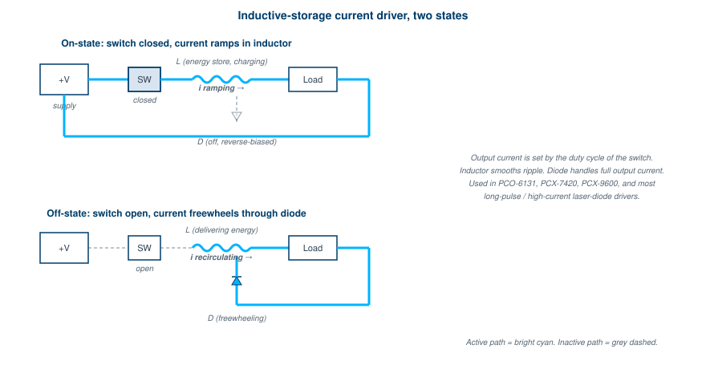
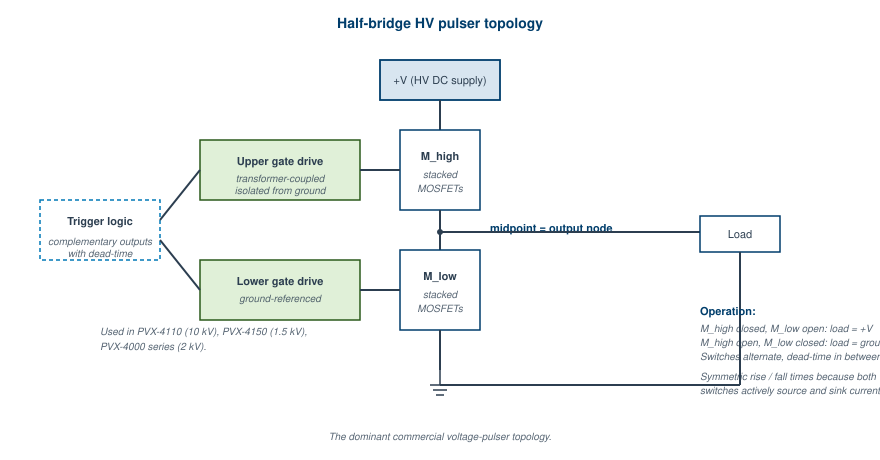

"Topologies are like architectural styles. Brutalist, ranch, art deco. Each has attributes you can predict regardless of size or layout. So with pulsers."
A pulser's topology is the wiring diagram, abstracted to the level where you can see what kind of pulser it is without knowing the component values. Two pulsers with completely different ratings can share a topology. Two pulsers with similar ratings can have completely different topologies. The topology determines what loads the pulser drives well, how the pulse is shaped, what fails first when the device is pushed past spec, and what kind of engineer you need on hand to fix it.
This chapter describes the topologies in commercial and research use as of this writing. The four covered in V1 (voltage-controlled current driver, inductive-storage current driver, PID-controlled current loop, half-bridge HV pulser) are preserved here, expanded, and joined by six more (solid-state Marx, inductive voltage adder, pulse-forming networks, Blumlein lines, magnetic pulse compression, resonant charging). Each section follows the same structure: the diagram, the working principle, the strengths and weaknesses, and an example product or facility that uses it.
The simplest current-pulser topology. A capacitor bank charges through a resistor, and a MOSFET switch dumps the charge through a string of resistors to set the current.
Working principle. The voltage on the storage capacitor sets the current that flows when the switch closes, by Ohm's law: I = V_stored / R_string. The current pulse is rectangular with rise and fall times set by the switch and the loop inductance. Pulse width is set by either the switch on-time or by the capacitor draining (whichever happens first).
Strengths. Compact, inexpensive, fast rise times because the resistive set-current loop is naturally low-inductance. The PCO-7110, PCO-7120, and PCO-7810 are open-board implementations of this topology, with the load (a laser diode) attached directly to the board to keep the loop area minimal.
Weaknesses. Power dissipation in the set resistors is significant. Pulse width is limited by the storage capacitor's energy budget. The topology is inflexible: changing the current means changing the supply voltage or the resistor string. Heat dissipation from the MOSFET is concentrated and the device can fail thermally if the user pushes the duty cycle too high.
Where it lives. Compact, fixed-current laser diode drivers and similar small-pulse-energy current sources where parts count and cost matter more than flexibility.
A buck-converter-style topology where the energy is stored in an inductor's magnetic field. A MOSFET switch chops the supply voltage, the inductor smooths the current, and the load sees a pulsed current set by the duty cycle of the chop.

Figure 6.1, Inductive-storage current driver in its two states. On-state at top, off-state at bottom. The inductor is the energy reservoir, and the diode provides the freewheeling path during the off state. Output current is set by duty cycle, with the inductor smoothing ripple.Working principle. During the on-state, the switch connects the supply to the inductor and the load. Current ramps up linearly with rate dI/dt = V_supply / L. During the off-state, the switch opens and the inductor's stored magnetic energy maintains current flow through a freewheeling diode and the load. Output current is roughly constant if the inductor is large enough and the switching frequency is high enough.
Strengths. Long pulse widths (multi-millisecond), even continuous-wave operation. Fast rise and fall times set by the switch, not by the inductor. Efficiency is high (no dissipation in a series resistor string). Variable current via duty-cycle modulation, controlled by a feedback loop.
Weaknesses. Output ripple from the switching action shows up on the current waveform, especially at low average current. This is why most inductive-storage pulsers have a minimum-current spec. The freewheeling diode has to handle the full output current and switch fast enough to follow the topology's switching frequency, which puts a real constraint on diode selection.
Where it lives. The PCO-6131, PCO-6141, PCX-7420, and PCX-9600 all use inductive storage as their core topology. So do most modern motor drives and power supplies, just with different scaling.
The high-current cousin of inductive-storage, with multiple parallel current loops feeding a common output and a microcontroller actively controlling the switch timing in each loop.
Working principle. Each loop is an inductive-storage stage, capable of about 40 A on its own. The output current is the parallel sum across all loops. A microcontroller measures the actual output current (via a current-viewing resistor) and adjusts each loop's duty cycle to maintain the commanded current. The PID compensator determines how aggressively the controller corrects deviations.
Strengths. Very high accuracy and constant-current behavior, even into varying loads. Pulse top is flat to better than 1% droop over multi-millisecond pulses. Maximum currents into the hundreds of amps because the parallel loops scale.
Weaknesses. Complex. Multiple high-power loops with synchronization requirements. Loop-to-loop matching matters. The PCX-7500 has 14 loops in parallel and a destruction mode if pushed past spec because the loops can crosstalk under fault conditions and damage components rapidly.
Where it lives. The PCX-7500 series is the definitive example. Several research-grade laser-diode test systems use similar architectures.
The dominant voltage-pulser topology in commercial instruments. Two switches in series, with the load tied to the midpoint, alternately drive the load high and low.
Working principle. Two MOSFET stacks (or stacked devices in series) connect from V_high to ground via the load. When the upper switch closes and the lower opens, the load sees V_high. When the lower closes and the upper opens, the load sees ground. The transition between states is fast, set by the switch speed. Bipolar variants have V_high and V_low rails (positive and negative supplies) and the load swings between them.
Strengths. Symmetric rise and fall times because the switches actively source and sink current. Fast transitions: the PVX-4150 hits 25 ns rise and fall at 1.5 kV. Robust under load shorts because the switches have well-defined off-states even during fault transients.
Weaknesses. Two switch stacks instead of one, doubling the parts count. Both switches must transition cleanly without overlap (shoot-through prevention adds dead-time, which the load capacitance fills with charge). Gate-drive isolation is more demanding because the upper switch is referenced to a switching node rather than to ground.
Where it lives. PVX-4110 (10 kV), PVX-4150 (1.5 kV), PVX-4000 series (2 kV). The dominant topology in the BNC-DEI voltage-pulser line.

Figure 6.2, The half-bridge HV pulser topology that dominates commercial voltage-pulser design. Symmetric switches with isolated gate drives produce fast, symmetric transitions. The output network at the load tunes the pulse fidelity for the specific load type.A modernization of the 1924 Marx topology, with semiconductors in place of spark gaps. Capacitors are charged in parallel and switched into series when the pulse fires, with the voltage adding across all stages.
Working principle. N stages, each containing a capacitor C and a semiconductor switch (typically a MOSFET or IGBT). Charging diodes connect the stages so that during charge, all capacitors charge to the same voltage from a common low-voltage supply. When the trigger arrives, all switches close simultaneously, and the capacitors are reconfigured into a series chain. Output voltage is N × V_charge.
Strengths. Output voltage scales with stage count, no theoretical upper limit (in practice, mechanical packaging and isolation set limits at hundreds of kV). Fast rise times if the switches are coordinated tightly (sub-100 ns at tens of kV is achievable). Modular: adding stages adds voltage capability without redesign of any single stage.
Weaknesses. All switches must trigger together within the desired rise time, which means tight gate-drive timing and fiber-optic distribution for triggers. Failure of any single stage propagates: a stage that fails closed shorts itself out (manageable, voltage just drops by V/N), but a stage that fails open prevents the whole pulser from firing.
Where it lives. Eagle Harbor Technologies builds commercial solid-state Marx pulsers in the 10 to 100 kV range. Several research pulsed-power facilities use solid-state Marx topology in the 100 to 500 kV class for klystron drivers and similar applications. The International Linear Collider was driven by a solid-state Marx topology for klystron modulator service.
A modulator topology where N pulse transformers, each driven by a separate primary stage, sum their secondary voltages in series at the load. The load sees N × V_secondary.
Working principle. Each primary stage is a half-bridge or push-pull driver running at a moderate voltage. The secondary windings are wired in series, so the output voltage at the load is the sum across all secondaries. Triggering all primaries simultaneously produces a coherent secondary pulse with voltage N times the per-stage value.
Strengths. Voltage scales without a high-voltage gate-drive isolation requirement, because each primary stage operates at a manageable voltage. Pulse transformers can be designed with low parasitic inductance, so rise times can be fast (tens of nanoseconds at hundreds of kV). The topology is well-suited to long pulses where a Marx generator's capacitor droop would be a problem.
Weaknesses. Pulse transformer design is non-trivial and often custom. Magnetic core saturation must be designed against. The primary side has to drive substantial current to develop the secondary voltage at usable currents.
Where it lives. Several research pulsers in the megavolt class. The Sandia ZR upgrade used inductive voltage adders. Stangenes Industries supplies pulse transformers used in IVA designs.
A PFN is a ladder of inductors and capacitors that emulates a charged transmission line. When switched into a matched load, it delivers a square pulse of duration set by the network's electrical length and amplitude set by the charge voltage.
Working principle. A real charged transmission line of length L delivers a pulse of duration 2L/v, where v is the propagation velocity. Practical line lengths are limited by physical size, so a lumped-element approximation is used: a ladder of N sections, each containing one inductor and one capacitor, approximates the distributed line. With enough sections, the output pulse closely matches the ideal square pulse.
Five canonical types. Guillemin's original taxonomy identified five PFN configurations (Type A through Type E) that differ in how the inductors and capacitors are arranged. The trade-offs are between pulse flatness, parts count, and ease of charging:
Strengths. Predictable, repeatable, rugged pulse shape determined by passive component values. No active control loop. Long-pulse operation (microseconds to milliseconds) without the droop a single capacitor would have at the same energy. Energy efficiency high because there is no dissipative regulation.
Weaknesses. Pulse shape is fixed at design time. Changing pulse width requires building a different PFN. The thyratron or other primary switch must handle the full peak current and recover between pulses. The components have to handle the full pulse current and voltage, which means substantial physical size for high-energy applications.
Where it lives. Radar modulators (still in service in legacy systems and in some new builds where ruggedness matters), klystron modulators in research accelerators, and certain industrial pulsed processes where the fixed pulse shape is an asset rather than a constraint.
The Blumlein is a refinement of the simple charged-transmission-line pulser, designed to deliver a pulse with full charge voltage at the load (rather than half, which a single line would give).
Working principle. Two transmission lines of equal impedance Z are charged to the same voltage. They are connected in series with the load between them. A switch shorts the input end of one line. The voltage step propagates down both lines, and at the load they combine to produce a pulse of duration equal to twice the line's electrical length, with amplitude equal to the charge voltage.
Strengths. Output pulse amplitude equals the charge voltage, with no factor of 2 derating. Useful for very short, very-high-voltage pulses. The pulse shape is exceptionally clean if the impedances are well matched.
Weaknesses. Physical size is dominated by the transmission lines. For a 100 ns pulse at the speed of light, the line is 30 m long, and at 0.66c (typical for water-dielectric pulsed-power lines), it is 20 m. Most Blumleins are coaxial structures filled with deionized water or oil, making them physically large.
Where it lives. Sandia's Hermes, Saturn, and Z Machine all use Blumlein architectures. They are the standard at the megavolt, multi-MA level for short-pulse applications.
A chain of saturable inductors, each compressing the pulse coming from the previous stage. Used to take a slow primary pulse from a thyratron and produce a much faster output pulse than the thyratron alone could deliver.
Working principle. Each compression stage is a saturable inductor with a parallel capacitor. Input current charges the capacitor while the inductor blocks current (high inductance, below saturation). When the capacitor reaches its operating voltage, the inductor saturates, the inductance collapses, and the energy stored in the capacitor dumps into the next stage as a sharper-edged pulse. Each stage typically reduces pulse width by a factor of 3 to 10, and chains of 4 to 6 stages are used to get from microseconds at the input to nanoseconds at the output.
Strengths. Reliable. The saturable cores have million-shot lifetimes when properly cooled. The output pulse rise time can be very fast (sub-100 ns at high voltage) without active switching at the output stage.
Weaknesses. Bulky and heavy because of the magnetic cores. Limited repetition rate because cores need time to reset between pulses (often biased with a reset winding to accelerate this). Modern semiconductor-based fast-rise pulsers have replaced magnetic compression in most applications below the 100 kV class.
Where it lives. Excimer laser drivers, certain industrial pulsed processes, and some legacy radar modulators. Stangenes is a primary US supplier of saturable cores for this application.
Strictly speaking not a pulser topology, but a charging topology that pulser designers have to know. A resonant charging stage replaces a slow resistive charger with a tuned LC circuit that transfers energy from a DC supply to the storage capacitor more efficiently.
Working principle. A series inductor between the DC supply and the storage capacitor forms an LC resonant circuit. When the storage capacitor is fully discharged, closing a switch initiates a half-cycle of LC resonance: the supply voltage drives current through the inductor into the capacitor, and the capacitor charges to roughly twice the supply voltage at the resonance peak. A blocking diode catches the capacitor at peak voltage, and the next pulse is ready to fire.
Strengths. Doubles the charge voltage relative to the supply (so a 5 kV supply charges a capacitor to 10 kV). High efficiency because the only loss is in the resonant inductor's resistance. Charge time is fast (fractions of the resonant period), which sets the upper limit on pulser repetition rate.
Weaknesses. Resonant components must be sized for the application, and changing pulse-energy requirements may require a different inductor. Switching transients during the charge stroke can couple noise into adjacent circuits.
Where it lives. Almost every commercial pulser with a fast charge time uses resonant charging. The PVX series, the PCX series, and most research-grade pulsers use this topology to reach high repetition rates.
Six considerations drive the selection of a pulser topology:
The matching from these targets to the right topology is mostly mechanical, but pulser engineering is a craft and the experienced practitioner often spots non-obvious matches. SiC half-bridge for what looks like a Marx job, because the modular packaging and gate-drive simplicity of half-bridge wins over the voltage-stacking advantage of Marx in the 10 to 30 kV range. Inductive storage for what looks like a half-bridge job, because the load is a laser diode with forward voltage that varies with operating point and the constant-current behavior matters more than the rise time. Etc. The catalog above is a starting point, not a deterministic answer.
The half-bridge topology achieves symmetric rise and fall times because: a. Both switches turn on at the same instant. b. The load is tied to the midpoint between two switches that actively source and sink current. c. The output capacitor balances the rise and fall. d. The supply voltage is symmetric around ground.
A solid-state Marx generator's output voltage equals: a. The charge voltage of one stage. b. The charge voltage divided by the number of stages. c. N times the charge voltage, where N is the number of stages. d. The charge voltage doubled.
A PFN's pulse shape is determined by: a. The trigger waveform applied to the switch. b. The L and C values of the network sections, fixed at design time. c. The supply voltage of the charger. d. A microcontroller running a control algorithm.
The PCX-7500 maintains constant output current to better than 1% droop over multi-millisecond pulses by using: a. A single very large storage capacitor. b. Multiple parallel inductive-storage current loops with PID control. c. A single MOSFET with gate-drive feedback. d. A spark-gap switch with millisecond hold-off.
Magnetic pulse compression chains are used to: a. Generate the initial pulse from a DC supply. b. Sharpen the rise time of a slow pulse from a primary switch using saturable inductors. c. Step up the pulse voltage with magnetic transformers. d. Filter noise from the output pulse.
A Blumlein line delivers a pulse with amplitude equal to: a. Half the charge voltage. b. The charge voltage. c. Twice the charge voltage. d. Four times the charge voltage.
Resonant charging provides what advantage over resistive charging? a. Faster charge time and charge voltage equal to roughly twice the supply voltage. b. Slower charge time but better stability. c. Lower component cost. d. Simpler triggering.
The same seven questions, graded instantly with your score saved on this device.
Answer key at end of book.
Glasoe, G.N. and Lebacqz, J.V. Pulse Generators. MIT Radiation Laboratory Series, Volume 5. The original treatment of PFNs. Guillemin's taxonomy is in Chapter 6 of the Glasoe-Lebacqz volume.
Bluhm, H. Pulsed Power Systems. Springer, 2006. Modern textbook treatment of Marx, Blumlein, and inductive voltage adder architectures.
Akiyama, H. and Heller, R., editors. Bioelectrics. Springer. Includes practical PFN and pulser-topology discussions specific to biomedical pulsed-power applications.
Mankowski, J. and Kristiansen, M. "A review of short pulse generator technology." IEEE Transactions on Plasma Science, April 2000. Survey of pulse-forming and pulse-sharpening techniques.
IEEE Pulsed Power Conference Proceedings, any recent year. The biennial gathering of practitioners. Solid-state Marx, IVA, and DSRD-driven systems are heavily represented in current proceedings.
End of Chapter 6.
Chapter 7 (Diagnostics and Measurement) follows.